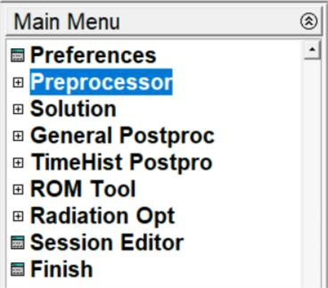
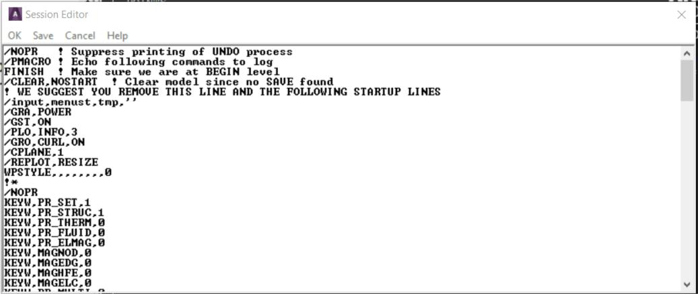

1.3 Mechanical APDL Environment
There are two basic levels in ANSYS - Begin level and Processor level.
The Begin level acts as a doorway into and out of the program. It is also used
for performing operations such as changing the jobname, clearing the
database, and copying binary files. When the analyst first enters the program,
s/he is at the Begin level.
At the Processor level, many processors are available. Each processor
is a set of functions that performs a specific analysis task. The model is built
in the general preprocessor (PREP7). Loads are applied and the solution is
obtained in the solution processor (SOLUTION). The results of a solution are
assessed in the general postprocessor (POST1). An additional postprocessor,
POST26, permits to evaluate solution results at specific points in the model as
a function of time.
1.3.1 Entering a Processor
Select a processor to enter it from the Main Menu of the GUI. Choose
Main Menu> Preprocessor to enter into PREP7.
1.3.2 Exiting from a Processor or from the Program
Pick Main Menu> Finish to return to the Begin level from a processor.
Without returning to the Begin level, the user can move from one processor
to another. Simply pick the processor necessary to do so.
Pick Utility Menu> File> Exit to leave ANSYS. By default, ANSYS
saves the model and loads automatically and writes them to the database
file, Jobname.DB. If a backup of the current database file already exists,
ANSYS writes it to Jobname.DBB. Other portions of the database can be
saved using options in the dialog box. The user can as well quit without
saving.
In order to input a new file, select Utility Menu> File> Clear & Start
New to clear the current file from memory, then select a file to input. In order
to return to processing the original file, select Utility Menu> File> Read
Input from..., select the name of the file to resume from and select
the OKbutton.
The processing of an input file can be stopped as it is being input. Most
files will display the Process Status window at the top of the screen. Use
the STOP button on the Process Status window to terminate the input of a
file. Stopping file input is useful when a binary file is input unintentionally.
1.3.3 The Database
ANSYS stores all input data and results data in one large database in
an structured manner. The main advantage of the database is any specific
data item can quickly and easily be listed, displayed, modified, or deleted.
No matter which processor the analyst is in, s/he works with the same
database. This gives basic access to the model and loads portions of the
database from anywhere in the program. "Basic access" refers the ability to
select, list, or display an item.
1.3.3.1 Defining or Deleting Database Items
The analyst must be in the right processor to define or delete items
from the database. Nodes, elements, and other geometry can be defined
only in PREP7, the general preprocessor. Loads can be specified and applied
in either the PREP7 or the SOLUTION processor. However, geometry items
can be selected, listed, or displayed from anywhere in ANSYS.
1.3.3.2 Saving the Database
The analyst should frequently save copies of database to a file as it
contains all the input data. Pick Utility Menu> File> Save as Jobname.DB to
do this. This choice writes the database to the file Jobname.DB. SAVE
command has the following options:
- the model data only
- the model and solution data
- the model, solution and preprocessing data.
Pick Utility Menu> File> Save as to specify a different file name. Any
save operation first writes a backup of the present database file
to Jobname.DBB. If a Jobname.DBB file already exists, the new backup file
overwrites it.
1.3.3.3 Restoring Database Contents
Pick Utility Menu> File> Resume Jobname.DB to restore data from
the database file. This reads the file Jobname.DB. Pick Utility Menu> File>
Resume from to specify a different file name.
The database can be saved or resumed from anywhere in ANSYS,
including the Begin level. A resume operation replaces the data currently in
memory with the data in the named database file. Using the save and resume
operations together is helpful when "testing" a function or command.
1.3.3.4 Session Editor
During an analysis, it may be necessary to modify or delete commands
entered since the last SAVE or RESUME. The session editor is used for
displaying and editing the sequence of operations performed since the last
SAVE or RESUME command. The analyst can modify command parameters,
delete whole sections of text or save a portion of the command string to a
separate file. The session editor (Fig. 1.4) can be accessed by choosing
Main Menu> Session Editor.


Fig. 1.4 The Session Editor
The following file operations are available in the session editor:
- OK: Enters the series of operations displayed in the window below.
Use this option to input the command sequence after modifying it
- Save: Saves the command sequence displayed in the window
below to a separate file. The program names the
file Jobnam000.cmds, with each subsequent save operation
incrementing the filename by one digit The INPUT command is
used to reenter the saved file
- Cancel: Dismisses this window and returns to the program
- Help: Displays the command reference for the UNDO command.
The Session Editor is available in GUI mode only. It is a powerful
ANSYS Undo. ANSYS keeps a running copy of the log file from the last save
command. By modifying the values in the Session Editor window and clicking
OK, the modified commands are read back into ANSYS. If
no SAVE or RESUME command has been issued during the analysis, all
commands from the current session will be executed, including
the start160.ans file, if present.
1.3.3.5 Clearing the Database
In building a model, sometimes it may be necessary to clear out the
database contents and start afresh. Choose Utility Menu> File> Clear &
Start New to do so. This method clears the database stored in memory.
Clearing the database has the same effect as leaving and re-entering the
program, but does not require to exit.
1.3.4 Program Files
The program writes and reads many files for data storage and
retrieval. File names follow this pattern: Name.Ext. Name defaults to the
jobname, which the analyst specifies while entering the program or by
choosing Utility Menu> File> Change Jobname. The default jobname
is FILE (or file). Ext is a unique, two- to four-character identifier that
identifies the contents of the file. For example, Jobname.DB is the database
file, Jobname.EMAT is the element matrix file, and Jobname.GRPH is the
neutral graphics file.
1.3.4.1 File Types
The filename can contain up to 248 characters, including the directory
name, and the extension can contain up to eight characters. ANSYS can
process blanks in file or directory names, so blank spaces are permitted in
object names. When an object has a blank space in its name, always enclose
the name in a pair of single quotes.
Use back slashes (\) instead of (/) slashes in directory names. For
example, a typical directory path looks like this:
C:\Program Files\ANSYS Inc\ANSYS
Student\v201\ANSYS\apdl\start.ans
1.3.4.2 The Jobname.LOG File
The Jobname.LOG file (the session log) is mainly important, as it
provides a complete log of the session. This file opens immediately when the
analyst enters ANSYS, and it records all commands executed. S/he can read
the Jobname.LOG file, view it while in ANSYS, edit it, and input it later.
The program always appends log data to the log file instead of
overwriting it. If the analyst changes the jobname while in a session, the log
file name does not change to the new jobname.
1.3.5 Communicating with ANSYS
The easiest way to communicate with the ANSYS is by using the
intuitive menu system, called the GUI.
1.3.5.1 Communicating via the GUI
The GUI consists of windows, menus, dialog boxes and other
components that permits to feed input data and execute functions simply by
picking buttons with a mouse or typing in responses to prompts. All users,
both beginner and advanced, find it convenient to use the GUI for interactive
work.
1.3.5.2 Communicating Via Commands
Commands are the instructions that instruct the program. The
program offers numerous commands, each meant for a specific function. Most
commands are allied with specific processors, and work in respective
processor(s). The analyst can either type in the appropriate command or
access that function from the GUI to use it.
Program commands have a specific format. A typical command consists
of a command name in the first field, usually followed by a comma and
several more fields (containing arguments). A comma separates each field.
For example, the F command, which applies a force at a node, looks like this:
F commmand
F,NODE,Lab,VALUE
To apply an X-direction force of 2000 at node number 376, the F command
would read as follows:
F,376,FX,2000
Command arguments may take a number or an alphanumeric labels,
depending on their function. In the F command example described
previously, NODE and VALUE are numeric arguments, but Lab is an
alphanumeric argument. In this book, numeric arguments appear in all
uppercase italic letters (as in NODE and VALUE), and alphanumeric arguments
appear in initial uppercase italic format (as in Lab).
1.3.5.3 Abbreviations
If a GUI function is used frequently, it can be renamed or abbreviated
to a string of up to eight alphanumeric characters using: Utility Menu>
Macro> Edit Abbreviations or Utility Menu> MenuCtrls> Edit Toolbar. In
the GUI, abbreviations appear as push buttons on the Toolbar. They can be
executed with a quick click of the mouse.
1.3.5.4 Command Macro Files
A frequently used sequence of commands can be recorded in a macro
file, thus creating a custom command. If an unrecognized command is
entered, the program searches for a macro file by that name (with an
extension of .MAC or .mac).